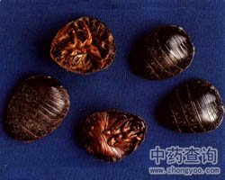

土鳖虫

拼音
Tǔ Biē Chónɡ
别名
地鳖虫、土元、地乌龟、蟅虫
来源
本品为鳖蠊科昆虫地鳖Eupolyphaga sinensis Walker 或冀地鳖Steleophaga plancyi（Boleny）的雌虫干燥体。捕捉后，置沸水中烫死，晒干或烘干。
生境分布
无生境分布数据
药材特点
1、地鳖体呈扁圆形，盖状，黑色带光泽，雌雄异型，雄虫有翅，雌虫无翅。雌虫长约3厘米。头小，触角丝状。腹部有横环节9个，腹面深棕色，胸足具细毛，生刺颇多。药材质脆，易破碎，足多已脱落。腹内有灰黑色物质。气腥臭。 喜生于阴湿处及墙角松土中，全国各地均有分布。 2、冀地鳖形态与地鳖相似，呈椭圆形，雌虫体长3.0～3.6厘米。体黑褐色，无光泽。胸腹部每节两侧各有一黑色圆形小黑斑。 分布于河北等地。
性状
地鳖：呈扁平卵形，长1.3～3cm，宽1.2～2.4cm。前端较窄，后端较宽，背部紫褐色，具光泽，无翅。前胸背板较发达，盖住头部；腹背板9节，呈覆瓦状排列。腹面红棕色，头部较小，有丝状触角1对，常脱落，胸部有足3对，具细毛和刺。腹部有横环节。质松脆，易碎。气腥臭，味微咸。 冀地鳖：长2.2～3.7cm，宽1.4～2.5cm。背部黑棕色，通常在边缘带有淡黄褐色斑块及黑色小点。
性味
咸，寒；有小毒。
功能主治
破瘀血，续筋骨。用于筋骨折伤，瘀血经闭，症瘕痞块。
用法用量
3～9g。
化学成分
无化学成分数据
药理作用
1：美蓝试管（2克生药/毫升）对白血病细胞有抑制作用
摘录
《中国药典》